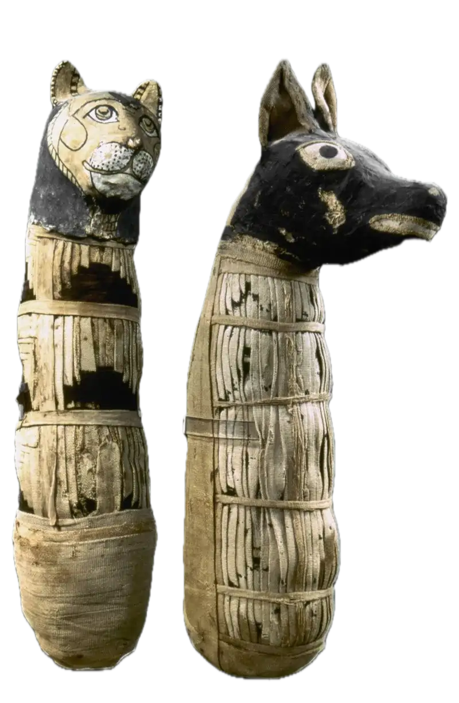

𓃾𓂀Antiguo Egipto𓁶𓆓
Los gatos éramos venerados y considerados como símbolos de protección de los cultivos.
Cuando uno de nosotros moría, la familia entraba en duelo. Algunos éramos momificados y enterrados como ofrenda.

Diosa Bastet
Representa la protección, el amor y la armonía. También es protectora de los hogares y templos.
Volver a inicio
Continuar el recorrido